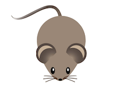

Using CSS to Torture Mice, Because Why Not?
"You know what, Mac? You're right. I didn't like Cheese. I had difficulty tolerating Cheese. And as far as I could tell, nobody else really had a taste for Cheese, either. Except the mice. Mice like Cheese. "
-Bloo, Foster's Home For Imaginary Friends
Let's say you've got an adorable mouse:

Hello!
And you've got some yummy cheese:
... (Cheese can't talk!)
And now let's say you need the two of them in the same line in an html document:
<html>